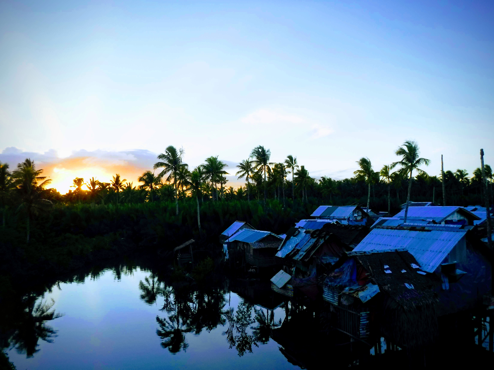
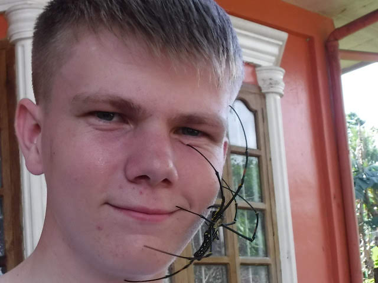
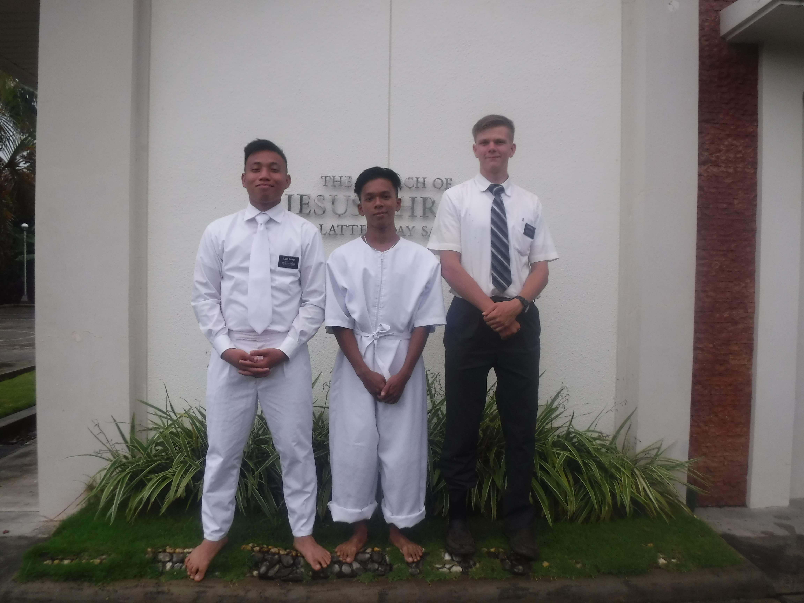
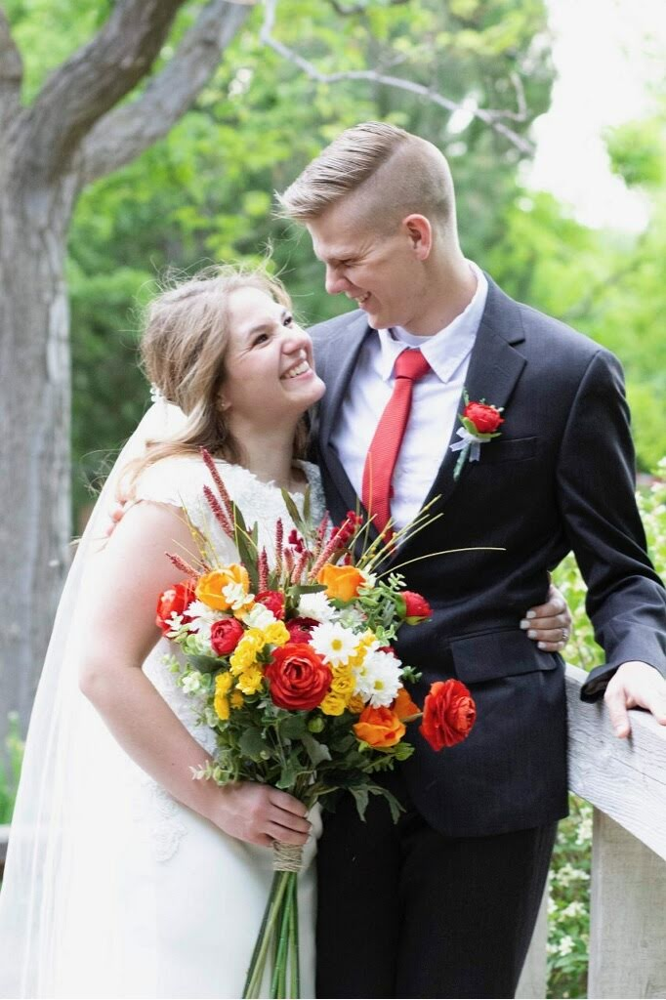
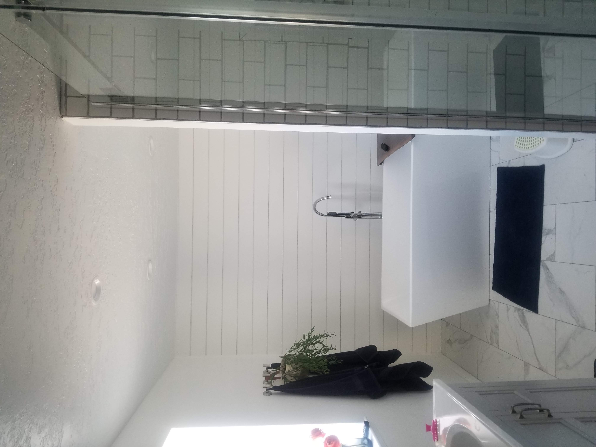
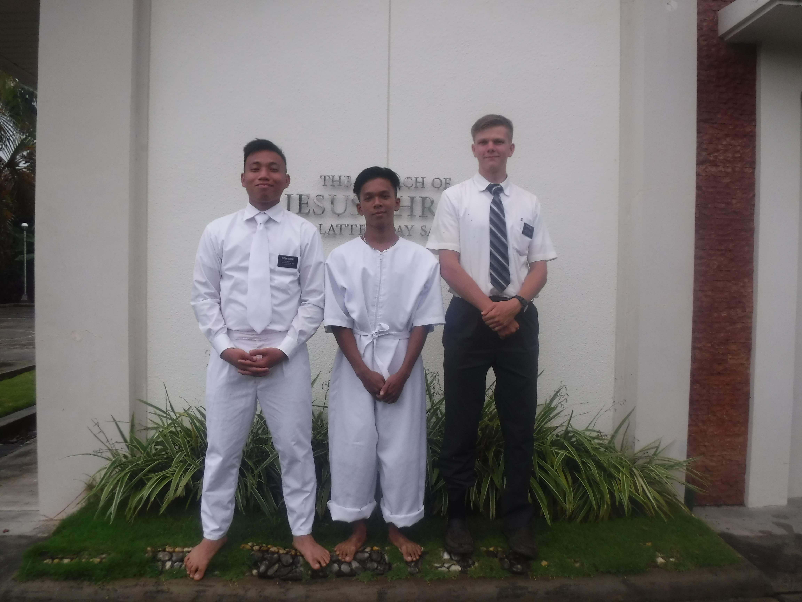
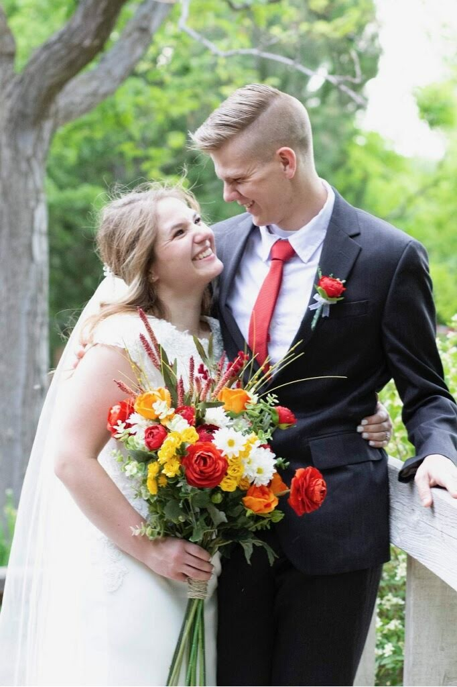
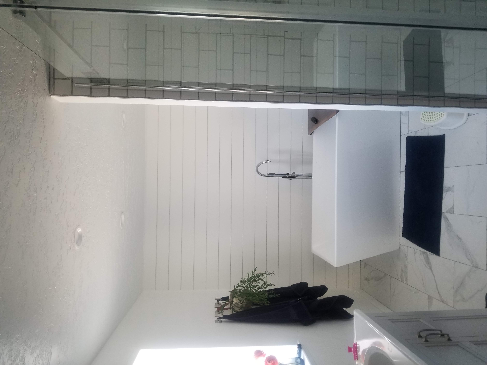

My Story:
I grew up in Payson and Spanish Fork attending 4 different elementary schools before finally settling down near Maple Mounatin High School with my family. I have 5 siblings, the youngest being 18 years younger than me. I played soccer in high school but mostly kept to myself other than I hung out with a small group of friends. After graduation, I went on a mission to the Philippines and learned 3 languages that also had differing dialects as well. I was able to learn how to build relationships with people, which is something I never thought I'd be able to do because I wouldn't talk to anybody in high school. After the mission, I came home and started school straight away here at BYU. I worked part time as a studnet supervisor on the production team for BYU events. When the pandemic hit I lost that job as well as a mentoring job I was also doing. This led me to a job search where I landed at Lowe's in Spanish Fork. I excelled quickly here and was promoted to an Appliance Specialist within a few months and then a year into my time at Lowe's I was the overnight Backend Operations Manager. Recently I landed a job with a company called Pure Storage as a Technical Support Engineer because of this class and somebody I worked with. I've absolutely loved it so far and would recommend anybody that's interested in an IT career to check out Pure Storage!
I also reconnected with somebody I met at EFY in 2015 who is now my wife! We started dating in October right before the pandemic of 2020 and we got married in June that year. We lived on campus for a while and then we decided to buy a house last January in Salem. Working at Lowe's helped us to make some amazing improvements to the house including a storage shed, a fresh paint job, and a very extensive bathroom renovation. We gutted the entire master bathroom, including the subfloor and plumbing, and changed the layout entirely. It's been a fun project, but it's also taken us FOREVER to complete because I work full-time and attend school full-time as well. We don't have any kids yet, but we are planning on having 2-3 within the next few years.
Pictures
  





Resume
Mission Statement: My goal is to graduate from BYU with a major in Business and an ability to learn IT skills that will help me pass certifications which I can use in the job field. This will prepare me for leadership in those roles with the ultimate mindset of creating my own business.
-
Education
- Maple Mountain High School: High School Diploma
- Brigham Young University: Current studies in Business Administration
-
Experience
- Church Service Mission | Tacloban, Philippines
- Student Supervisor | Brigham Young University
- Sales Specialist | Lowe's Home Improvement
- Backend Operations Manager | Lowe's Home Improvement
- Technical Support Engineer | Pure Storage
-
Skills
- Proficiency in multiple Filipino Languages
- Prioritization of heavy workloads
- Customer Case Management
- Customer Service
- Breaking large tasks into workable projects
- Project planning and delagation to team
- Moderate understanding of SQL, VBA, Tableau, and HTML Web Development
- Excel Solver and Pivot Tables